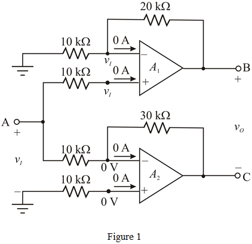
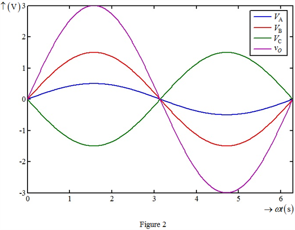

The input voltage is,
The voltage at node A is,
Apply Kirchhoff’s current law at inverting terminal of the first op-amp.
Substitute for  in the equation.
in the equation.
Therefore, the node voltage, is .
(a)
Refer to circuit diagram in Figure P2.77 in the textbook.
In an ideal op-amp, the inverting and non-inverting terminal currents are zero and the inverting and non-inverting node voltages are equal. The modified circuit is shown in Figure 1.

The input voltage is,
The voltage at node A is,
Apply Kirchhoff’s current law at inverting terminal of the first op-amp.
Substitute for in the equation.
Therefore, the node voltage, is .
Apply Kirchhoff’s current law at inverting terminal of the second op-amp.
Substitute for  in the equation.
in the equation.

Therefore, the node voltage,  is .
is .
Calculate the output voltage.
Therefore, the output voltage,  is .
is .

(b)
Calculate the voltage gain.
Therefore, the voltage gain,  is .
is .
(c)
The op-amps outputs saturates at .
Let node voltage,  can be as large as 28 V peak to peak.
can be as large as 28 V peak to peak.
Similarly, node voltage, is also 28 V peak to peak.
Calculate the largest sine wave output peak-to-peak voltage.
Therefore, the largest sine wave output peak-to-peak voltage is .
Calculate the largest sine wave output rms voltage.
Therefore, the largest sine wave output rms voltage, is  .
.